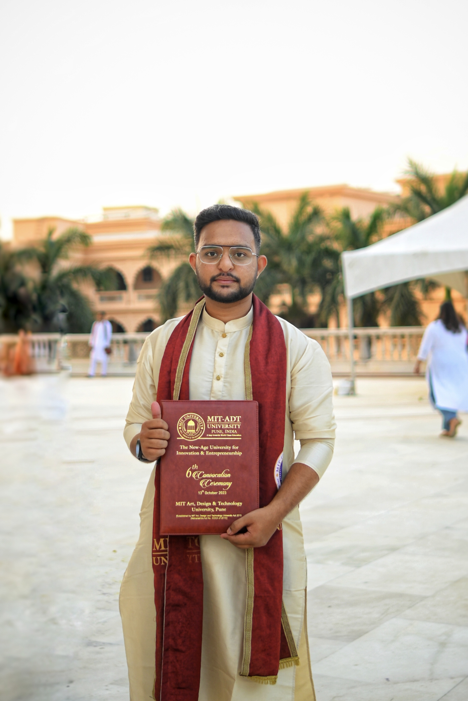

By Yogesh Bapusaheb Kadam
Hi, I’m Yogesh Kadam. I have completed my B.Tech in Computer Science & Engineering from MIT ADT, Pune, with a CGPA of 7.32/10. I am passionate about web development, programming, and creating innovative solutions. I enjoy collaborating on real-world projects and have experience in building applications for different domains.
If you’d like to learn more about my work, education, and project experience, feel free to download my resume below.
Download My Resume